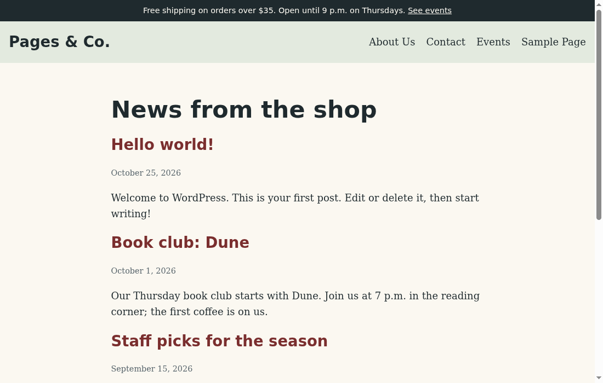
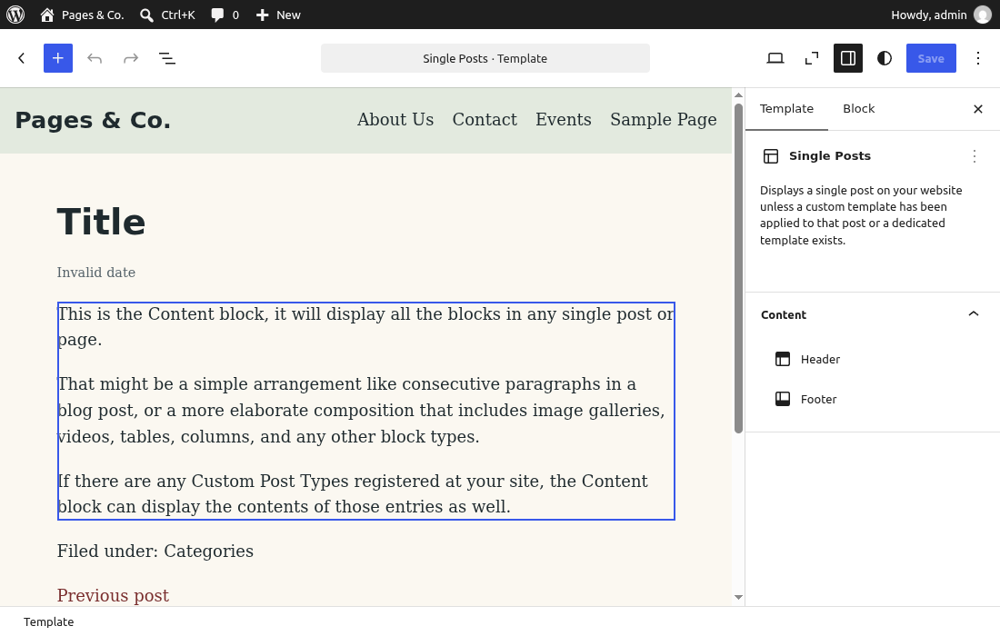

🏗️ Lesson 3.2: Building a Block Theme
In Lesson 3.1 you mapped every kind of page on the Pages & Co. site and listed the six templates a theme needs to draw them. Now you build that theme: pagesco, a block theme with its own header, a theme.json design system in the shop's colors, a header and footer, and the six templates. By the end of the lesson it is the active theme, and every later lesson in Module 3 and beyond builds on it.
🎯 Learning Objectives
By the end of this lesson, you will be able to:
- Write a theme header in
style.cssthat WordPress reads and checks on activation - Define a design system in
theme.json:settings(palette, fonts, sizes, spacing, layout) andstyles(global, elements, blocks), and read the CSS WordPress generates from it - Write templates and template parts in block markup, combining static blocks with dynamic ones such as the Query Loop, Post Title and Post Content
- Activate and verify a block theme with WP-CLI and the Site Editor, with site features such as the store notice still working
- Diagnose an invalid
theme.json, a missing template part and a Site Editor copy that overrides your file
In This Lesson
🗺️ From Template Map to File List
Your template map from Lesson 3.1 said Pages & Co. needs six templates: index, single, page, archive, search and 404. Add the header, the footer, the theme header and the design system, and you have the whole theme. This is what wordpress/wp-content/themes/pagesco/ will contain at the end of the lesson:
pagesco/
├── style.css theme header: name, version, requirements, text domain
├── theme.json the design system: colors, fonts, sizes, spacing, styles
├── parts/
│ ├── header.html site title + navigation
│ └── footer.html address + contact
└── templates/
├── index.html the news list (also the blog home), and the last resort
├── single.html one news post
├── page.html About Us, Contact, Events...
├── archive.html category, author and date archives
├── search.html search results
└── 404.html not foundNo functions.php and no CSS file: a block theme can be complete without either. You will add patterns and a style variation in Lesson 3.3, and the classic-theme lessons of Module 4 show what functions.php is for.
💡 Mental model: style guide, floor plans, signs
Designing a shop interior, you would write a style guide first (the brand colors, the typefaces, the spacing), then draw floor plans for each room, reusing the same signs at every entrance. A block theme has the same three layers. theme.json is the style guide; every block on every page draws from it. Templates are the floor plans, one per kind of page. Template parts are the signs: the header and footer you design once and hang in every template. Change the style guide and every room follows.
💡 The Smallest Block Theme That Works
Lesson 3.1 showed that a block theme needs two files: style.css and templates/index.html. Start there, so you have a working theme within ten minutes, and grow it from that. Create the folder wordpress/wp-content/themes/pagesco/ and in it style.css:
/*
Theme Name: Pages & Co.
Theme URI: https://example.com/pagesco/
Author: Pages & Co.
Author URI: https://example.com/
Description: The block theme of the Pages & Co. independent bookstore.
Requires at least: 6.6
Tested up to: 7.1
Requires PHP: 7.4
Version: 1.0.0
License: GNU General Public License v2 or later
License URI: http://www.gnu.org/licenses/gpl-2.0.html
Text Domain: pagesco
*/| Field | What WordPress does with it |
|---|---|
Theme Name | The name on the Themes screen and in WP-CLI. The only field WordPress strictly needs |
Requires at least, Requires PHP | Checked on activation: a site that is too old refuses to switch (Exercise 3). 6.6 because theme.json version 3 arrived in 6.6; 7.4 because that is WordPress's own minimum |
Tested up to | Informational; the theme directory shows it |
Version | Your release number; also handy as a cache-busting version for assets (Lesson 4.3) |
Text Domain | Must equal the folder name, pagesco, for translations (Lessons 1.3 and 8.3) |
License, License URI | Required by the theme directory; WordPress themes are GPL like WordPress itself |
Now the one required template. A first version with the site title and a list of posts is enough to switch to the theme. Create templates/index.html:
<!-- wp:site-title {"level":0} /-->
<!-- wp:query {"queryId":1,"query":{"inherit":true}} -->
<div class="wp-block-query">
<!-- wp:post-template -->
<!-- wp:post-title {"isLink":true,"level":2} /-->
<!-- /wp:post-template -->
</div>
<!-- /wp:query -->Two blocks. The Site Title block prints the site name ("level":0 means a paragraph rather than a heading). The Query Loop (wp:query) repeats its Post Template once per post; "inherit":true means "show whatever the main query found", so the same block lists the latest posts on the blog home, the posts of a category on a category archive, and the results on a search page. Switch to the theme:
wp theme activate pagesco
wp eval 'var_dump( wp_is_block_theme(), wp_theme_has_theme_json() );'Output
Success: Switched to 'Pages & Co.' theme.
bool(true)
bool(false)A block theme, without a theme.json yet. (WP-CLI prints the name as Pages & Co. because WordPress stores theme names with the ampersand escaped, the same as the site title in Lesson 1.2.) Open http://localhost:8080/: an unstyled list of post titles, and at the very top, your store notice. Its callback is attached to wp_body_open (Lesson 2.3), and template-canvas.php fires that action for every block theme, so the new theme carries it without knowing it exists:
http://localhost:8080/Output
<div class="pagesco-notice">Free shipping on orders over $35. Open until 9 p.m. on Thursdays. <a href="http://localhost:8080/events/">See events</a></div>http://localhost:8080/ (the visible text)Output
Free shipping on orders over $35. Open until 9 p.m. on Thursdays. See events
Pages & Co.
Hello world!
Book club: Dune
Staff picks for the season
Welcome to the new Pages & Co. websiteThe notice, the site name, and the four posts, newest first. Ugly but correct: the content is all there, and from here on every change is about how it looks.
🎨 theme.json: Settings and Styles
theme.json has two halves, and keeping them apart is the key to understanding it:
settingsdefine what is available: the colors in the palette, the font families and sizes, the spacing steps, the content widths, and which design controls the editors show. Each preset becomes a CSS custom property and a set of classes.stylesdefine what is applied: the page background, the body text, links, headings, buttons and individual block types, usually by pointing at a preset.
Here is the first version of the Pages & Co. design system: five colors named for the shop (paper, ink, an oxblood red for links, a pale sage, a slate gray), two font stacks, four font sizes, three spacing steps and two layout widths, plus the page's base colors and text. Create wordpress/wp-content/themes/pagesco/theme.json:
{
"$schema": "https://schemas.wp.org/wp/7.1/theme.json",
"version": 3,
"settings": {
"color": {
"defaultPalette": false,
"palette": [
{ "slug": "paper", "name": "Paper", "color": "#fbf8f1" },
{ "slug": "ink", "name": "Ink", "color": "#1f2a2e" },
{ "slug": "oxblood", "name": "Oxblood", "color": "#7a2e2e" },
{ "slug": "sage", "name": "Sage", "color": "#e3eadf" },
{ "slug": "slate", "name": "Slate", "color": "#56636a" }
]
},
"layout": {
"contentSize": "680px",
"wideSize": "1180px"
},
"spacing": {
"defaultSpacingSizes": false,
"spacingSizes": [
{ "slug": "small", "name": "Small", "size": "1rem" },
{ "slug": "medium", "name": "Medium", "size": "clamp(1.5rem, 4vw, 2.5rem)" },
{ "slug": "large", "name": "Large", "size": "clamp(2.5rem, 8vw, 5rem)" }
]
},
"typography": {
"defaultFontSizes": false,
"fluid": true,
"fontFamilies": [
{ "slug": "serif", "name": "Serif", "fontFamily": "Charter, 'Bitstream Charter', 'Sitka Text', Cambria, serif" },
{ "slug": "sans", "name": "Sans", "fontFamily": "system-ui, -apple-system, 'Segoe UI', Roboto, sans-serif" }
],
"fontSizes": [
{ "slug": "small", "name": "Small", "size": "0.9rem", "fluid": false },
{ "slug": "medium", "name": "Medium", "size": "1.125rem", "fluid": false },
{ "slug": "large", "name": "Large", "size": "1.75rem", "fluid": { "min": "1.4rem", "max": "1.75rem" } },
{ "slug": "x-large", "name": "Extra Large", "size": "2.75rem", "fluid": { "min": "2rem", "max": "2.75rem" } }
]
}
},
"styles": {
"color": {
"background": "var:preset|color|paper",
"text": "var:preset|color|ink"
},
"typography": {
"fontFamily": "var:preset|font-family|serif",
"fontSize": "var:preset|font-size|medium",
"lineHeight": "1.6"
}
}
}A few things to notice. "$schema" points your editor (VS Code and most others) at the official schema for WordPress 7.1, so it autocompletes keys and underlines mistakes as you type. "version": 3 is the current format of the file, not your theme's version. "defaultPalette": false hides WordPress's own palette of eleven colors from editors, so they choose from the shop's five. The free color picker stays available next to the palette; adding "custom": false to settings.color removes it, so editors can only pick a palette color (Pages & Co. keeps the picker for now). The fonts are system font stacks: they use fonts already on the visitor's device, so there is nothing to download. (Shipping font files works through fontFace entries, as Twenty Twenty-Five does; Lesson 3.3 points you there.) "fluid" font sizes scale between a minimum and a maximum with the screen width. And in styles, var:preset|color|paper is theme.json's shorthand for "the preset color with the slug paper".
What WordPress makes of it
WordPress merges three layers: core's defaults, your theme.json, and anything the site owner changes in the Site Editor's Styles panel. It then prints the result as CSS in a <style id="global-styles-inline-css"> element on every page. Each palette color became a CSS custom property:
curl -s http://localhost:8080/ | grep -o -- '--wp--preset--color--[a-z]*: #[0-9a-f]*'Output
--wp--preset--color--black: #000000
--wp--preset--color--white: #ffffff
--wp--preset--color--paper: #fbf8f1
--wp--preset--color--ink: #1f2a2e
--wp--preset--color--oxblood: #7a2e2e
--wp--preset--color--sage: #e3eadf
--wp--preset--color--slate: #56636aYour five colors, plus black and white, which WordPress keeps defined even with the default palette switched off. The styles section became a rule for the whole page. var:preset|color|paper turned into var(--wp--preset--color--paper):
curl -s http://localhost:8080/ | grep -o 'body{[^}]*}' | head -n 1Output
body{background-color: var(--wp--preset--color--paper);color: var(--wp--preset--color--ink);font-family: var(--wp--preset--font-family--serif);font-size: var(--wp--preset--font-size--medium);line-height: 1.6;padding-top: 0px;padding-right: 0px;padding-bottom: 0px;padding-left: 0px;}The same data is available in PHP, which is how you read design values from your own code instead of repeating hex numbers. wp_get_global_settings() takes a path into the merged settings:
wp eval 'foreach ( wp_get_global_settings( array( "color", "palette", "theme" ) ) as $c ) { echo $c["slug"], " ", $c["color"], "\n"; } echo wp_get_global_settings( array( "layout", "contentSize" ) ), "\n";'Output
paper #fbf8f1
ink #1f2a2e
oxblood #7a2e2e
sage #e3eadf
slate #56636a
680px✅ Use the presets, not the hex values
When a template needs the sage background, it says "backgroundColor":"sage", which becomes the class has-sage-background-color, which uses var(--wp--preset--color--sage). Never #e3eadf. Then a style variation (Lesson 3.3) or a site owner in the Styles panel can change "sage" once and every template follows. Hard-coded values are the main reason old themes are hard to restyle.
💡 Contrast is part of the design system
Check text and background pairs when you choose a palette. Ink on paper is about 14:1 and oxblood links on paper about 8.8:1, both well above the 4.5:1 that WCAG AA asks for normal text; slate on paper, used for small dates, is about 5.8:1. Pale sage is a background color only. Lesson 8.3 goes through accessibility checks properly.
📐 Templates and Template Parts
Templates are where your block markup skills from Lesson 2.1 pay off. Every template is a list of blocks, and two kinds of block do almost all the work:
- Static blocks such as Group, Heading and Paragraph save their HTML in the file, between the block comments:
<!-- wp:group --><div class="wp-block-group">…</div><!-- /wp:group -->. That HTML must be exactly what the block would save itself, or the Site Editor flags the block as invalid (see the tip below). - Dynamic blocks such as Site Title, Navigation, Post Title, Post Content, Post Date and Query Loop are rendered by PHP on every request and are written self-closing:
<!-- wp:post-title {"level":1} /-->. Their attributes go in the JSON; their HTML is never in the file.
The header part
A template part is a file in parts/ that templates include with the Template Part block. Create wordpress/wp-content/themes/pagesco/parts/header.html: a full-width sage band with the site title on the left and the navigation on the right.
<!-- wp:group {"align":"full","style":{"spacing":{"padding":{"top":"var:preset|spacing|small","bottom":"var:preset|spacing|small"}}},"backgroundColor":"sage","layout":{"type":"constrained"}} -->
<div class="wp-block-group alignfull has-sage-background-color has-background" style="padding-top:var(--wp--preset--spacing--small);padding-bottom:var(--wp--preset--spacing--small)">
<!-- wp:group {"align":"wide","layout":{"type":"flex","flexWrap":"wrap","justifyContent":"space-between"}} -->
<div class="wp-block-group alignwide">
<!-- wp:site-title {"level":0} /-->
<!-- wp:navigation {"layout":{"type":"flex","justifyContent":"right","flexWrap":"wrap"}} /-->
</div>
<!-- /wp:group -->
</div>
<!-- /wp:group -->Read it from the outside in. The outer Group is full width ("align":"full"), uses the sage preset as its background and the small spacing preset as padding, and has a constrained layout: its children are centered and kept to the content width from theme.json, unless they ask for wide or full. The inner Group asks for the wide width (1180px) and uses a flex layout to put its two children in a row with the space between them. Notice that the layout settings live only in the JSON; WordPress adds the layout classes when it renders the page. The Navigation block has no menu of its own, so WordPress uses the site's existing navigation menu: the wp_navigation post 4 that Twenty Twenty-Five created, which lists your pages.
The finished index template
Now replace templates/index.html with the real thing: the header part, a main landmark with a heading and the Query Loop, and the footer part (you create the footer in the project; until then WordPress leaves the space empty). This is the template for the news list, and because every other template falls back to index, it is also the safety net for any page type you do not cover.
<!-- wp:template-part {"slug":"header","tagName":"header"} /-->
<!-- wp:group {"tagName":"main","style":{"spacing":{"padding":{"top":"var:preset|spacing|medium","bottom":"var:preset|spacing|large"}}},"layout":{"type":"constrained"}} -->
<main class="wp-block-group" style="padding-top:var(--wp--preset--spacing--medium);padding-bottom:var(--wp--preset--spacing--large)">
<!-- wp:heading {"level":1} -->
<h1 class="wp-block-heading">News from the shop</h1>
<!-- /wp:heading -->
<!-- wp:query {"queryId":1,"query":{"inherit":true}} -->
<div class="wp-block-query">
<!-- wp:post-template -->
<!-- wp:post-title {"isLink":true,"level":2} /-->
<!-- wp:post-date /-->
<!-- wp:post-excerpt /-->
<!-- /wp:post-template -->
<!-- wp:query-pagination -->
<!-- wp:query-pagination-previous /-->
<!-- wp:query-pagination-numbers /-->
<!-- wp:query-pagination-next /-->
<!-- /wp:query-pagination -->
<!-- wp:query-no-results -->
<!-- wp:paragraph -->
<p>Nothing here yet.</p>
<!-- /wp:paragraph -->
<!-- /wp:query-no-results -->
</div>
<!-- /wp:query -->
</main>
<!-- /wp:group -->
<!-- wp:template-part {"slug":"footer","tagName":"footer"} /-->"tagName":"header" on the Template Part block wraps the part in a <header> element, and "tagName":"main" makes the Group a <main>: that gives screen-reader users the page landmarks (banner, main, contentinfo) they navigate by. The Query Loop gained a date and an excerpt per post, pagination (Settings > Reading shows 10 posts per page) and a message for an empty result. Check the landmarks and the first post in the list:
curl -s http://localhost:8080/ | grep -o '<header[^>]*>\|<main[^>]*>\|<h1[^>]*>[^<]*\|<h2 class="wp-block-post-title"><a [^>]*>[^<]*' | head -n 4Output
<header class="wp-block-template-part">
<main id="wp--skip-link--target" class="wp-block-group is-layout-constrained wp-block-group-is-layout-constrained" style="padding-top:var(--wp--preset--spacing--medium);padding-bottom:var(--wp--preset--spacing--large)">
<h1 class="wp-block-heading">News from the shop
<h2 class="wp-block-post-title"><a href="http://localhost:8080/hello-world/" target="_self" >Hello world!The part arrived as <header class="wp-block-template-part">, and WordPress added layout classes (is-layout-constrained) and an id to your main group. That id is the target of the "Skip to content" link core adds to every block theme.
✅ Let the editor write static markup for you
Hand-writing the HTML of static blocks is where mistakes creep in: one class in the wrong order and the Site Editor shows "This block contains unexpected or invalid content". The professional shortcut: build the section in the Site Editor (Appearance > Editor), open the Options menu (⋮), switch to the Code editor, and copy the markup into your file. Every template in this lesson was checked that way, and Lesson 3.3 shows how to export a whole edited theme back to files.
🧩 Version note: theme.json versions
Version 3 of the theme.json format arrived in WordPress 6.6 and is still current in 7.1. The main change from version 2 is that defaultFontSizes and defaultSpacingSizes now default to true, so a theme that wants only its own presets sets them to false, as yours does. A theme with "version": 2 still works: WordPress migrates the file in memory. On a client site running WordPress older than 6.6, your theme would refuse to activate because of Requires at least: 6.6, which is exactly what that header is for.
⚠️ Common Mistakes
Block themes fail quietly. A broken file rarely stops the site; it just stops your design from appearing. Make each mistake on purpose, then fix it.
1. A trailing comma in theme.json
JSON is stricter than PHP arrays: no comma after the last item, double quotes only, no comments. Add a comma after "wideSize": "1180px" in theme.json (the last entry of layout):
sed -i 's/"wideSize": "1180px"/"wideSize": "1180px",/' wp-content/themes/pagesco/theme.json
curl -s http://localhost:8080/ | head -n 3
curl -s http://localhost:8080/ | grep -c -- '--wp--preset--color--oxblood'Output
Notice: wp_json_file_decode(): Error when decoding a JSON file at path /var/www/html/wp-content/themes/pagesco/theme.json: Syntax error in /var/www/html/wp-includes/functions.php on line 6260
<!DOCTYPE html>
0What it means: wp_json_file_decode() could not parse the file ("Syntax error"), so WordPress used no theme.json at all: your palette, fonts and page colors are gone (zero oxblood variables) and the site falls back to core's defaults. With WP_DEBUG on you get this Notice at the top of every page (above <!DOCTYPE html>, as with any notice in a block theme, Lesson 2.3) and in debug.log; on a live site there is no message at all, only a suddenly plain design. The notice names the file but not the line. Fix: remove the comma. Your editor finds the line for you: with the $schema line in place, VS Code underlines the error as you type, and php -r 'json_decode( file_get_contents( "theme.json" ) ); echo json_last_error_msg(), "\n";' checks the file from a terminal.
sed -i 's/"wideSize": "1180px",/"wideSize": "1180px"/' wp-content/themes/pagesco/theme.json
curl -s http://localhost:8080/ | grep -c -- '--wp--preset--color--oxblood'Output
12. A template part slug that does not exist
You start the page template and mistype the header slug as heder:
<!-- wp:template-part {"slug":"heder","tagName":"header"} /-->
<!-- wp:post-title {"level":1} /-->
<!-- wp:post-content /-->A visitor sees the About page without a header and gets no message. Count the site titles on the page, first logged out, then logged in as admin:
curl -s http://localhost:8080/about/ | grep -c 'wp-block-site-title'Output
0http://localhost:8080/about/ (logged in as admin)Output
Template part has been deleted or is unavailable: heder
About Us
...What it means: the Template Part block looked for a part with the slug heder in the database and in parts/, found neither, and rendered nothing. Only logged-in users get a hint, in place of the header. There is no PHP error, so debug.log stays silent too. Fix: the slug is the file name without .html. When a header or footer is missing, check the slug first, logged in. You write the real page template in the project; delete this one for now:
rm wp-content/themes/pagesco/templates/page.html3. The Site Editor's copy wins over your file
The shop manager opens Appearance > Editor, changes the index template, and clicks Save. Saving sends the new block markup to the REST API, exactly like this request (you can make the same change by hand in the Site Editor instead):
POST http://localhost:8080/wp-json/wp/v2/templates/pagesco//index
{"content":"<!-- wp:paragraph --><p>Edited in the Site Editor</p><!-- /wp:paragraph -->"}Output
{
"id": "pagesco//index",
"source": "custom",
"has_theme_file": true
}A week later you improve templates/index.html and reload the home page. Your change does not appear, because the page is drawn from the saved copy:
curl -s http://localhost:8080/ | grep -c 'Edited in the Site Editor'
wp post list --post_type=wp_template --fields=ID,post_name,post_statusOutput (the ID on your site may not match)
1
+----+-----------+-------------+
| ID | post_name | post_status |
+----+-----------+-------------+
| 19 | index | publish |
+----+-----------+-------------+What it means: the template's source is now custom: a wp_template post (Lesson 3.1) that WordPress prefers over the file, and has_theme_file says the file still exists underneath. Nothing is broken; this is the feature that lets site owners customize a theme without touching code. It just means files and database can disagree. Fix: decide which version is right. To go back to the file, use "Reset" on the template in the Site Editor (Templates, then the template's ⋮ menu), or delete the copy with WP-CLI, using the ID from your list. To keep the owner's change, export it into the theme first (Lesson 3.3).
wp post delete 19 --force
curl -s http://localhost:8080/ | grep -c 'News from the shop'Output
Success: Deleted post 19.
1🛠️ Project: Finish the pagesco Theme
You have a working block theme with a header and an index template. Now complete it to match your template map: the full design system, the footer, and the five remaining templates. Then verify the whole site from the command line. Allow about 55 minutes. When you are done, pagesco is the theme the rest of the course builds on.
🛠️ Step 1: Complete the design system (15 min)
Replace theme.json with the full version. It keeps everything from before and adds: appearanceTools (turns on the border, spacing and typography controls in the editors), root padding so content never touches the screen edge on phones, styles for links, headings, buttons, the site title and post dates, a little custom CSS for the store notice, and the two template part areas.
{
"$schema": "https://schemas.wp.org/wp/7.1/theme.json",
"version": 3,
"settings": {
"appearanceTools": true,
"color": {
"defaultPalette": false,
"defaultGradients": false,
"defaultDuotone": false,
"palette": [
{ "slug": "paper", "name": "Paper", "color": "#fbf8f1" },
{ "slug": "ink", "name": "Ink", "color": "#1f2a2e" },
{ "slug": "oxblood", "name": "Oxblood", "color": "#7a2e2e" },
{ "slug": "sage", "name": "Sage", "color": "#e3eadf" },
{ "slug": "slate", "name": "Slate", "color": "#56636a" }
]
},
"layout": {
"contentSize": "680px",
"wideSize": "1180px"
},
"spacing": {
"defaultSpacingSizes": false,
"spacingSizes": [
{ "slug": "small", "name": "Small", "size": "1rem" },
{ "slug": "medium", "name": "Medium", "size": "clamp(1.5rem, 4vw, 2.5rem)" },
{ "slug": "large", "name": "Large", "size": "clamp(2.5rem, 8vw, 5rem)" }
]
},
"typography": {
"defaultFontSizes": false,
"fluid": true,
"fontFamilies": [
{ "slug": "serif", "name": "Serif", "fontFamily": "Charter, 'Bitstream Charter', 'Sitka Text', Cambria, serif" },
{ "slug": "sans", "name": "Sans", "fontFamily": "system-ui, -apple-system, 'Segoe UI', Roboto, sans-serif" }
],
"fontSizes": [
{ "slug": "small", "name": "Small", "size": "0.9rem", "fluid": false },
{ "slug": "medium", "name": "Medium", "size": "1.125rem", "fluid": false },
{ "slug": "large", "name": "Large", "size": "1.75rem", "fluid": { "min": "1.4rem", "max": "1.75rem" } },
{ "slug": "x-large", "name": "Extra Large", "size": "2.75rem", "fluid": { "min": "2rem", "max": "2.75rem" } }
]
},
"useRootPaddingAwareAlignments": true
},
"styles": {
"color": {
"background": "var:preset|color|paper",
"text": "var:preset|color|ink"
},
"spacing": {
"blockGap": "1.25rem",
"padding": {
"left": "var:preset|spacing|small",
"right": "var:preset|spacing|small"
}
},
"typography": {
"fontFamily": "var:preset|font-family|serif",
"fontSize": "var:preset|font-size|medium",
"lineHeight": "1.6"
},
"elements": {
"link": {
"color": { "text": "var:preset|color|oxblood" },
":hover": { "typography": { "textDecoration": "none" } }
},
"heading": {
"typography": {
"fontFamily": "var:preset|font-family|sans",
"fontWeight": "700",
"lineHeight": "1.2"
}
},
"h1": { "typography": { "fontSize": "var:preset|font-size|x-large" } },
"h2": { "typography": { "fontSize": "var:preset|font-size|large" } },
"button": {
"color": {
"background": "var:preset|color|oxblood",
"text": "var:preset|color|paper"
}
}
},
"blocks": {
"core/site-title": {
"typography": {
"fontFamily": "var:preset|font-family|sans",
"fontSize": "var:preset|font-size|large",
"fontWeight": "700"
},
"elements": {
"link": { "color": { "text": "var:preset|color|ink" } }
}
},
"core/post-date": {
"color": { "text": "var:preset|color|slate" },
"typography": { "fontSize": "var:preset|font-size|small" }
}
},
"css": ".pagesco-notice { background: var(--wp--preset--color--ink); color: var(--wp--preset--color--paper); font-family: var(--wp--preset--font-family--sans); font-size: var(--wp--preset--font-size--small); padding: 0.5rem 1rem; text-align: center; } .pagesco-notice a { color: inherit; }"
},
"templateParts": [
{ "name": "header", "title": "Header", "area": "header" },
{ "name": "footer", "title": "Footer", "area": "footer" }
]
}Three layers of styles, from general to specific: styles itself (the whole page), styles.elements (HTML elements wherever they appear: every link, every h1, every button) and styles.blocks (one block type, here the site title and the post date). styles.css is plain CSS for what presets cannot express; the store notice's markup comes from the site plugin, but how it looks is the theme's job, so its CSS lives here. templateParts tells the Site Editor that header belongs in the Header area and footer in the Footer area. Check that the new rules arrived:
curl -s http://localhost:8080/ | grep -o 'a:where(:not(.wp-element-button)){color[^}]*}\|\.pagesco-notice {[^}]*}'Output
a:where(:not(.wp-element-button)){color: var(--wp--preset--color--oxblood);}
.pagesco-notice { background: var(--wp--preset--color--ink); color: var(--wp--preset--color--paper); font-family: var(--wp--preset--font-family--sans); font-size: var(--wp--preset--font-size--small); padding: 0.5rem 1rem; text-align: center; }The link rule's selector is a:where(:not(.wp-element-button)): every link except buttons (they get the button colors), and :where() adds no specificity, so the rule is as weak as a plain a selector. A link color an editor sets on a single block therefore still wins over the theme's default. That is deliberate: the theme sets defaults, content can override them. Your css string arrived as written.
🛠️ Step 2: The footer part (8 min)
Create parts/footer.html: an ink band with the shop's address. Text and links are set to the paper color on the Group, so the links stay readable on the dark background:
<!-- wp:group {"align":"full","style":{"spacing":{"padding":{"top":"var:preset|spacing|medium","bottom":"var:preset|spacing|medium"}},"elements":{"link":{"color":{"text":"var:preset|color|paper"}}}},"backgroundColor":"ink","textColor":"paper","layout":{"type":"constrained"}} -->
<div class="wp-block-group alignfull has-paper-color has-ink-background-color has-text-color has-background has-link-color" style="padding-top:var(--wp--preset--spacing--medium);padding-bottom:var(--wp--preset--spacing--medium)">
<!-- wp:paragraph {"fontSize":"small"} -->
<p class="has-small-font-size">Pages & Co. · 12 Market Street · 555-0142</p>
<!-- /wp:paragraph -->
<!-- wp:paragraph {"fontSize":"small"} -->
<p class="has-small-font-size">Open Monday to Saturday · <a href="mailto:hello@example.com">hello@example.com</a></p>
<!-- /wp:paragraph -->
</div>
<!-- /wp:group -->The class list follows the attributes: has-paper-color and has-ink-background-color from textColor and backgroundColor, the generic has-text-color has-background, and has-link-color from the link color under style.elements. The & is how an ampersand is written in HTML. Every template already includes the footer, so the index page now shows it:
http://localhost:8080/ (the footer, as text)Output
Pages & Co. · 12 Market Street · 555-0142
Open Monday to Saturday · hello@example.com🛠️ Step 3: The other five templates (20 min)
Each template uses the same frame as index.html (header part, a main group, footer part) and changes only what is inside main. Create all five in templates/. First single.html, for one news post: title, date, the content, its categories and links to the neighboring posts.
<!-- wp:template-part {"slug":"header","tagName":"header"} /-->
<!-- wp:group {"tagName":"main","style":{"spacing":{"padding":{"top":"var:preset|spacing|medium","bottom":"var:preset|spacing|large"}}},"layout":{"type":"constrained"}} -->
<main class="wp-block-group" style="padding-top:var(--wp--preset--spacing--medium);padding-bottom:var(--wp--preset--spacing--large)">
<!-- wp:post-title {"level":1} /-->
<!-- wp:post-date /-->
<!-- wp:post-content {"layout":{"type":"constrained"}} /-->
<!-- wp:post-terms {"term":"category","prefix":"Filed under: "} /-->
<!-- wp:post-navigation-link {"type":"previous","label":"Previous post"} /-->
<!-- wp:post-navigation-link {"label":"Next post"} /-->
</main>
<!-- /wp:group -->
<!-- wp:template-part {"slug":"footer","tagName":"footer"} /-->page.html is simpler: pages have no date, categories or neighbors.
<!-- wp:template-part {"slug":"header","tagName":"header"} /-->
<!-- wp:group {"tagName":"main","style":{"spacing":{"padding":{"top":"var:preset|spacing|medium","bottom":"var:preset|spacing|large"}}},"layout":{"type":"constrained"}} -->
<main class="wp-block-group" style="padding-top:var(--wp--preset--spacing--medium);padding-bottom:var(--wp--preset--spacing--large)">
<!-- wp:post-title {"level":1} /-->
<!-- wp:post-content {"layout":{"type":"constrained"}} /-->
</main>
<!-- /wp:group -->
<!-- wp:template-part {"slug":"footer","tagName":"footer"} /-->archive.html serves categories, authors and dates. The Query Title block prints "Category: News", "Author: Maria Lopez" and so on, and Term Description shows a category's description when there is one:
<!-- wp:template-part {"slug":"header","tagName":"header"} /-->
<!-- wp:group {"tagName":"main","style":{"spacing":{"padding":{"top":"var:preset|spacing|medium","bottom":"var:preset|spacing|large"}}},"layout":{"type":"constrained"}} -->
<main class="wp-block-group" style="padding-top:var(--wp--preset--spacing--medium);padding-bottom:var(--wp--preset--spacing--large)">
<!-- wp:query-title {"type":"archive"} /-->
<!-- wp:term-description /-->
<!-- wp:query {"queryId":1,"query":{"inherit":true}} -->
<div class="wp-block-query">
<!-- wp:post-template -->
<!-- wp:post-title {"isLink":true,"level":2} /-->
<!-- wp:post-date /-->
<!-- wp:post-excerpt /-->
<!-- /wp:post-template -->
<!-- wp:query-pagination -->
<!-- wp:query-pagination-previous /-->
<!-- wp:query-pagination-numbers /-->
<!-- wp:query-pagination-next /-->
<!-- /wp:query-pagination -->
</div>
<!-- /wp:query -->
</main>
<!-- /wp:group -->
<!-- wp:template-part {"slug":"footer","tagName":"footer"} /-->search.html repeats the search form above the results and says something helpful when nothing matched:
<!-- wp:template-part {"slug":"header","tagName":"header"} /-->
<!-- wp:group {"tagName":"main","style":{"spacing":{"padding":{"top":"var:preset|spacing|medium","bottom":"var:preset|spacing|large"}}},"layout":{"type":"constrained"}} -->
<main class="wp-block-group" style="padding-top:var(--wp--preset--spacing--medium);padding-bottom:var(--wp--preset--spacing--large)">
<!-- wp:query-title {"type":"search"} /-->
<!-- wp:search {"label":"Search","buttonText":"Search"} /-->
<!-- wp:query {"queryId":1,"query":{"inherit":true}} -->
<div class="wp-block-query">
<!-- wp:post-template -->
<!-- wp:post-title {"isLink":true,"level":2} /-->
<!-- wp:post-excerpt /-->
<!-- /wp:post-template -->
<!-- wp:query-no-results -->
<!-- wp:paragraph -->
<p>No books or posts matched your search. Try another word.</p>
<!-- /wp:paragraph -->
<!-- /wp:query-no-results -->
</div>
<!-- /wp:query -->
</main>
<!-- /wp:group -->
<!-- wp:template-part {"slug":"footer","tagName":"footer"} /-->And 404.html, in the shop's voice, with a way forward:
<!-- wp:template-part {"slug":"header","tagName":"header"} /-->
<!-- wp:group {"tagName":"main","style":{"spacing":{"padding":{"top":"var:preset|spacing|medium","bottom":"var:preset|spacing|large"}}},"layout":{"type":"constrained"}} -->
<main class="wp-block-group" style="padding-top:var(--wp--preset--spacing--medium);padding-bottom:var(--wp--preset--spacing--large)">
<!-- wp:heading {"level":1} -->
<h1 class="wp-block-heading">This page is not on our shelves</h1>
<!-- /wp:heading -->
<!-- wp:paragraph -->
<p>The page you asked for does not exist, or it has moved. Try a search:</p>
<!-- /wp:paragraph -->
<!-- wp:search {"label":"Search","buttonText":"Search"} /-->
</main>
<!-- /wp:group -->
<!-- wp:template-part {"slug":"footer","tagName":"footer"} /-->Ask WordPress what the theme now offers:
wp eval 'foreach ( get_block_templates() as $t ) { echo $t->id, " ", $t->source, " ", $t->title, "\n"; } foreach ( get_block_templates( array(), "wp_template_part" ) as $t ) { echo $t->id, " ", $t->area, "\n"; }'Output
pagesco//404 theme Page: 404
pagesco//archive theme All Archives
pagesco//search theme Search Results
pagesco//single theme Single Posts
pagesco//page theme Pages
pagesco//index theme Index
pagesco//footer footer
pagesco//header headerSix templates, all from your files (theme), with the titles WordPress gives the standard names, and two parts in their areas. A custom in that list would mean a Site Editor copy (Common Mistakes, number 3).
🛠️ Step 4: Verify the whole site (12 min)
Check every row of your template map at once. For each URL, this prints the HTTP status, how many notice bars, headers and footers the page has, and its <h1>:
for url in / /hello-world/ /about/ /category/news/ /author/maria/ /2026/09/ "/?s=dune" /nothing-here/; do
page=$(curl -s -w '\n%{http_code}' "http://localhost:8080$url")
echo "$url $(echo "$page" | tail -n 1) notice:$(echo "$page" | grep -c '<div class="pagesco-notice"') header:$(echo "$page" | grep -c '<header class="wp-block-template-part"') footer:$(echo "$page" | grep -c '<footer class="wp-block-template-part"') h1: $(echo "$page" | grep -o '<h1.*</h1>' | head -n 1 | sed 's/<[^>]*>//g')"
doneOutput
/ 200 notice:1 header:1 footer:1 h1: News from the shop
/hello-world/ 200 notice:1 header:1 footer:1 h1: Hello world!
/about/ 200 notice:1 header:1 footer:1 h1: About Us
/category/news/ 200 notice:1 header:1 footer:1 h1: Category: News
/author/maria/ 200 notice:1 header:1 footer:1 h1: Author: Maria Lopez
/2026/09/ 200 notice:1 header:1 footer:1 h1: Month: September 2026
/?s=dune 200 notice:1 header:1 footer:1 h1: Search results for: “dune”
/nothing-here/ 404 notice:1 header:1 footer:1 h1: This page is not on our shelvesEvery page has the notice, a header and a footer, and an <h1> that names it: the Query Title block wrote "Category: News", "Author: Maria Lopez" and "Month: September 2026" for you, and the search title wraps the search term in curly quotes (“ and ” are their HTML entities). The 404 page answers with status 404, not 200, so search engines do not index it. Now look at the result in your browser. The home page should look like this:

pagesco theme on the home page.Finally, open Appearance > Editor > Templates. Your six templates are listed with their descriptions, and opening one shows it with live data inside the frame of your header and footer:

✅ Project Completion Checklist
wp-content/themes/pagesco/holdsstyle.css,theme.json,parts/header.html,parts/footer.htmland six templateswp theme listshowspagescoas active, andwp_is_block_theme()is true- The page is paper-colored with ink text, serif body type, sans-serif headings and oxblood links
- Every URL from your template map has the notice bar, the header, the footer and one
<h1>;/nothing-here/returns 404 get_block_templates()lists six templates with the sourcetheme(no Site Editor copies)- You updated
pagesco-plan.txt: check off the six templates in your template map
🏋️ Hands-on Exercises
Each exercise changes the theme a little. Later lessons expect pagesco exactly as the project left it, so undo each change when you have seen it work (the solutions show how).
🏋️ Exercise 1: A Sixth Color
Add a color "Gold" (#b58a2a, slug gold) to the palette and prove that WordPress generated both its custom property and its text-color class rule. Then remove it again.
💡 Hint
One more object in settings.color.palette. Each palette color produces --wp--preset--color--gold and a class rule .has-gold-color in the global styles. You can edit the file in your editor; the solution uses sed to keep it to one command.
✅ Solution
sed -i 's|{ "slug": "slate", "name": "Slate", "color": "#56636a" }|{ "slug": "slate", "name": "Slate", "color": "#56636a" },\n\t\t\t\t{ "slug": "gold", "name": "Gold", "color": "#b58a2a" }|' wp-content/themes/pagesco/theme.json
curl -s http://localhost:8080/ | grep -o -- '--wp--preset--color--gold: [^;]*\|\.has-gold-color{[^}]*}'Output
--wp--preset--color--gold: #b58a2a
.has-gold-color{color: var(--wp--preset--color--gold) !important;}The class rule uses the custom property, with !important so a color chosen for one block beats every other rule. To undo, delete the Gold line again (here with sed, which also removes the comma it added):
sed -i -e '/"slug": "gold"/d' -e 's|"color": "#56636a" },|"color": "#56636a" }|' wp-content/themes/pagesco/theme.json
curl -s http://localhost:8080/ | grep -c -- '--wp--preset--color--gold'Output
0🏋️ Exercise 2: A Template for the News Category
Pages & Co. wants its News category to open with a short welcome line. Use the hierarchy from Lesson 3.1: create the most specific template for /category/news/, copy archive.html into it, and add a paragraph "Shop news, events and staff picks, newest first." after the Query Title. Check that the News archive shows it and the author archive does not. Then delete the template.
💡 Hint
The category chain was category-news, category-2, category, archive, index. Prefer the slug version over the ID. A Paragraph block is <!-- wp:paragraph --><p>…</p><!-- /wp:paragraph -->.
✅ Solution
sed 's|\(<!-- wp:query-title {"type":"archive"} /-->\)|\1\n\t<!-- wp:paragraph -->\n\t<p>Shop news, events and staff picks, newest first.</p>\n\t<!-- /wp:paragraph -->|' wp-content/themes/pagesco/templates/archive.html > wp-content/themes/pagesco/templates/category-news.html
grep -n "Shop news" wp-content/themes/pagesco/templates/category-news.html
curl -s http://localhost:8080/category/news/ | grep -c "Shop news"
curl -s http://localhost:8080/author/maria/ | grep -c "Shop news"Output
7: <p>Shop news, events and staff picks, newest first.</p>
1
0The News archive found category-news.html first; every other archive still falls through to archive.html. (grep -c printing 0 makes the last command exit with status 1; that is expected.) Delete the template to get back to the project state:
rm wp-content/themes/pagesco/templates/category-news.html🏋️ Exercise 3: The Requirements Check
Change Requires at least in style.css to a version that does not exist yet, 7.9. Switch to Twenty Twenty-Five and back to pagesco. What happens, and why does WordPress only check this on activation? Put the header back to 6.6 and make sure pagesco ends up active.
💡 Hint
sed -i 's/Requires at least: 6.6/Requires at least: 7.9/' changes the header. wp theme activate runs the same checks as the Activate button.
✅ Solution
sed -i 's/Requires at least: 6.6/Requires at least: 7.9/' wp-content/themes/pagesco/style.css
wp theme activate twentytwentyfive
wp theme activate pagescoError
Success: Switched to 'Twenty Twenty-Five' theme.
Error: Error: Current WordPress version does not meet minimum requirements for Pages & Co..WordPress refuses the switch (WP-CLI repeats the word "Error:" because it wraps core's own error message). The check runs on activation because that is the moment a site owner can still choose; a theme that is already active keeps running, since switching it off by surprise would be worse. Put it back:
sed -i 's/Requires at least: 7.9/Requires at least: 6.6/' wp-content/themes/pagesco/style.css
wp theme activate pagescoOutput
Success: Switched to 'Pages & Co.' theme.🏋️ Exercise 4: Style One Block Type (Stretch)
The "Staff picks for the season" post (Lesson 2.1) contains a quote from Fahrenheit 451. Give every Quote block on the site a 4px oxblood left border and italic text, using theme.json only, and find the rule WordPress generated. Then remove your change.
💡 Hint
Add a "core/quote" entry next to "core/post-date" in styles.blocks, with "border": { "left": { "color": …, "width": "4px", "style": "solid" } } and "typography": { "fontStyle": "italic" }. The generated selector is :root :where(.wp-block-quote). Keep a copy of theme.json (the solution puts it in the WordPress root as theme.json.bak) so undoing is one command.
✅ Solution
cp wp-content/themes/pagesco/theme.json theme.json.bak
sed -i 's|"core/post-date": {|"core/quote": {\n\t\t\t\t"border": { "left": { "color": "var:preset\|color\|oxblood", "width": "4px", "style": "solid" } },\n\t\t\t\t"typography": { "fontStyle": "italic" }\n\t\t\t},\n\t\t\t"core/post-date": {|' wp-content/themes/pagesco/theme.json
curl -s http://localhost:8080/staff-picks/ | grep -o ':root :where(.wp-block-quote){[^}]*}'Output
:root :where(.wp-block-quote){border-left-color: var(--wp--preset--color--oxblood);border-left-width: 4px;border-left-style: solid;font-style: italic;}One entry in theme.json, and every quote on the site follows, in the editor as well as on the front end. Restore your copy:
mv theme.json.bak wp-content/themes/pagesco/theme.json
curl -s http://localhost:8080/staff-picks/ | grep -c ':root :where(.wp-block-quote){border'Output
0🎯 Quick Quiz
🎯 Check Your Understanding
Question 1: Your theme.json palette has { "slug": "oxblood", "name": "Oxblood", "color": "#7a2e2e" }. Which CSS custom property can your styles use?
Question 2: Which two files does a block theme need at the very least?
Question 3: A template contains <!-- wp:template-part {"slug":"site-footer"} /-->, but the theme's part is parts/footer.html. What does a visitor who is not logged in see?
Question 4: Editors should be able to pick the five shop colors but not open a free color picker. Where does that belong?
Question 5: You changed parts/header.html, but the site still shows the old header. wp post list --post_type=wp_template_part lists a post named header. What do you do?
❓ Common Questions at This Stage
Why is style.css almost empty? Where does my CSS go?
In a block theme most styling belongs in theme.json, because there it becomes presets and controls the editors understand. A block theme does not even load style.css on the front end unless functions.php enqueues it. Small additions go in styles.css (or per block in styles.blocks.core/…css); larger stylesheets are enqueued from functions.php (Lesson 4.3) or attached to a block style (Lesson 3.3).
Do I need a screenshot.png?
Not to work; without it the Themes screen shows a blank card. For a theme you hand over or publish, add a 1200 × 900 PNG or JPG of the home page named screenshot.png. Take it once the design is finished (Lesson 3.3 adds the front-page patterns).
How do I use a web font such as one from Google Fonts?
Download the font files into the theme (for example assets/fonts/) and add a fontFace array to the font family in theme.json, as Twenty Twenty-Five does; WordPress then loads them from your own site, with no request to a third-party server (better for privacy and speed). Site owners can also install fonts themselves in Appearance > Fonts.
Should templates be written by hand or in the Site Editor?
Both, in a loop. Write structure and dynamic blocks by hand (they are short and easy to read), build visual sections with many static blocks in the editor and copy the markup, and keep the files in Git (Lesson 8.4). What you should not do is leave important design in the database only, where it is not versioned and does not travel with the theme.
🌟 Going Further: Bonus Challenge
On a phone, the Navigation block in your header collapses into a menu button, because its overlayMenu attribute defaults to "mobile". Resize your browser to about 400 pixels wide, open the menu, and decide whether the overlay's default colors fit the shop. Then look up the Navigation block's overlayBackgroundColor and overlayTextColor attributes (Twenty Twenty-Five's header pattern uses them) and set them to presets from your palette in parts/header.html. Which of your colors give the overlay text enough contrast?
📓 Learning Journal
Take five minutes to write in your learning journal (a notebook or a plain text file works fine). Jot down:
- Key concepts you learned today
- Techniques that clicked (and the ones that have not, yet)
- Questions or confusion to bring to the next session
- Ideas to try on your own
- Progress and feelings: how did this lesson go for you?
✍️ This lesson's prompt: You wrote a style guide (theme.json) before the floor plans (templates). Imagine the shop rebrands next year with new colors and a new typeface. List exactly which files of pagesco you would have to touch, and which you would not. What does that tell you about where design decisions should live?
📝 Lesson Summary
🎓 Key Takeaways
- A block theme starts with
style.css(the header WordPress reads and checks on activation) andtemplates/index.html theme.jsonsettings define what is available (presets, controls, layout widths); styles define what is applied (page, elements, blocks)- Each preset becomes a CSS custom property (
--wp--preset--color--oxblood) and classes; refer to presets, never to raw values - Templates are block markup: static blocks carry their exact HTML, dynamic blocks are self-closing and rendered by PHP; template parts are included by slug
- Block themes get
wp_head,wp_body_openandwp_footerfrom core, so plugin output such as the store notice keeps working - Invalid JSON and wrong part slugs fail quietly; Site Editor saves are database copies that win over files
| You want | Write |
|---|---|
| A brand color | settings.color.palette: { "slug": "oxblood", "name": "Oxblood", "color": "#7a2e2e" } |
| Use it in theme.json | "var:preset|color|oxblood" |
| Use it in CSS | var(--wp--preset--color--oxblood) |
| Use it on a block | "backgroundColor":"oxblood" (class has-oxblood-background-color) |
| Style all links / one block type | styles.elements.link / styles.blocks["core/quote"] |
| Include the header | <!-- wp:template-part {"slug":"header","tagName":"header"} /--> |
| List the posts of any archive | <!-- wp:query {"query":{"inherit":true}} --> with a Post Template |
| Read design values in PHP | wp_get_global_settings( array( 'color', 'palette', 'theme' ) ) |
🏆 What You've Accomplished
- You built
pagesco, the Pages & Co. block theme, from an empty folder to an active theme with a design system, two parts and six templates - You read the CSS WordPress generates from
theme.jsonand the design values it exposes to PHP - You verified every page type from the command line: status, landmarks, notice bar and heading
- You broke the theme three quiet ways on purpose and know how to spot and fix each one
🔭 Looking Ahead
In Lesson 3.3: Patterns, Style Variations & the Site Editor you make pagesco richer and easier to use for the shop's staff: PHP pattern files with ready-made sections (a hero, a featured-books row, a call to action), synced patterns, section styles, a style variation that recolors the whole site from one JSON file, and the workflow for exporting Site Editor changes back into your theme's files.
📋 Before the Next Lesson
- Make sure
pagescois the active theme and your files match the project exactly (exercise changes undone) - Run
wp post list --post_type=wp_template,wp_template_part: it should list no posts. If you saved in the Site Editor, reset those templates - Browse your site on a phone-sized window and note one thing you would like to look different; Lesson 3.3 gives you the tools
🌱 Encouragement for the Journey
You just built a complete WordPress theme, from an empty folder, and it draws every page of a real site. That is a milestone many WordPress users never reach. If the long JSON and the block markup felt like a lot to type, that is normal; after a few themes you will copy your own theme.json as a starting point and spend your time on design instead. And when something does not show up, you now have a short list of quiet causes to check before you start doubting yourself.